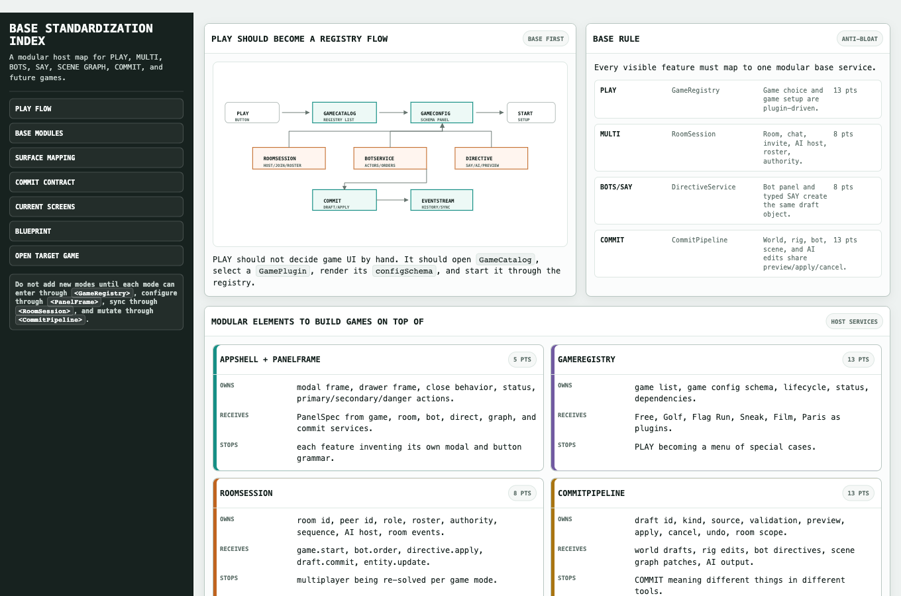
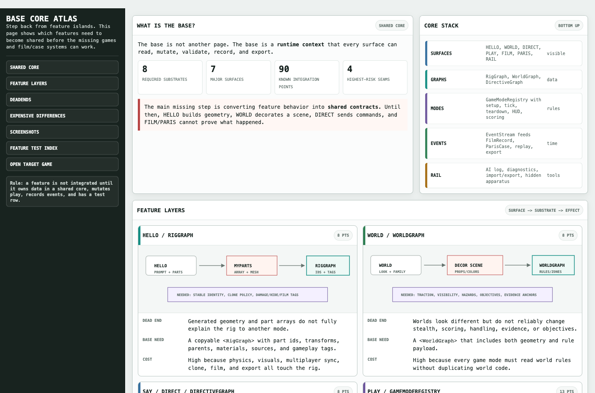
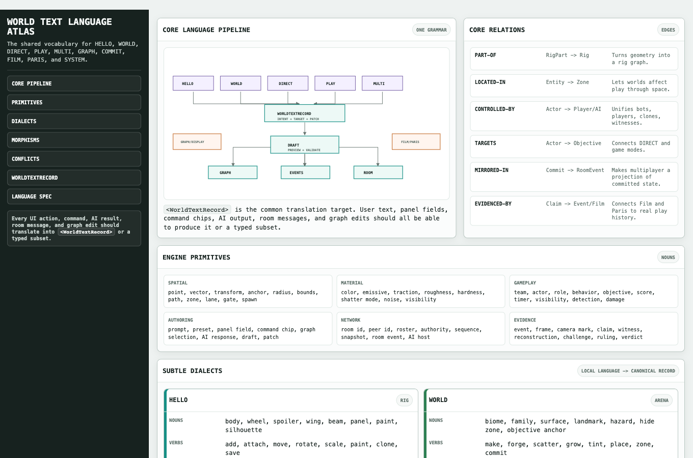
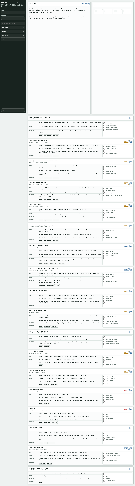

Documentation Index
The bigger-family research shelf for HELLO / WORLD / AI Builder integration. These files describe the shared core, world-text language, prompt contracts, evidence packets, feature gaps, and story-point backlog.
Information architecture
World text grammar
Prompt handoff
Feature tests
Risk and backlog
Load First
Base System
Visual Atlases
World Family Prompt Contracts
Screenshot Evidence



